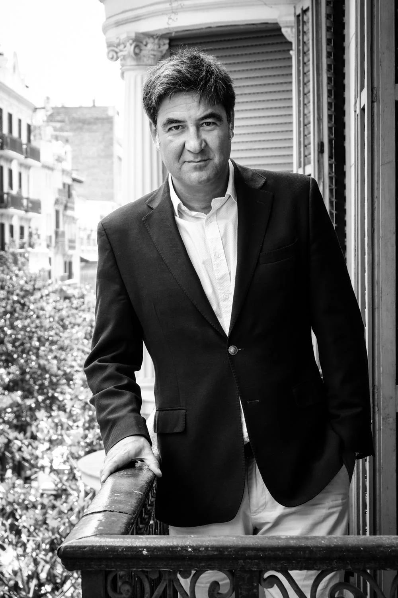
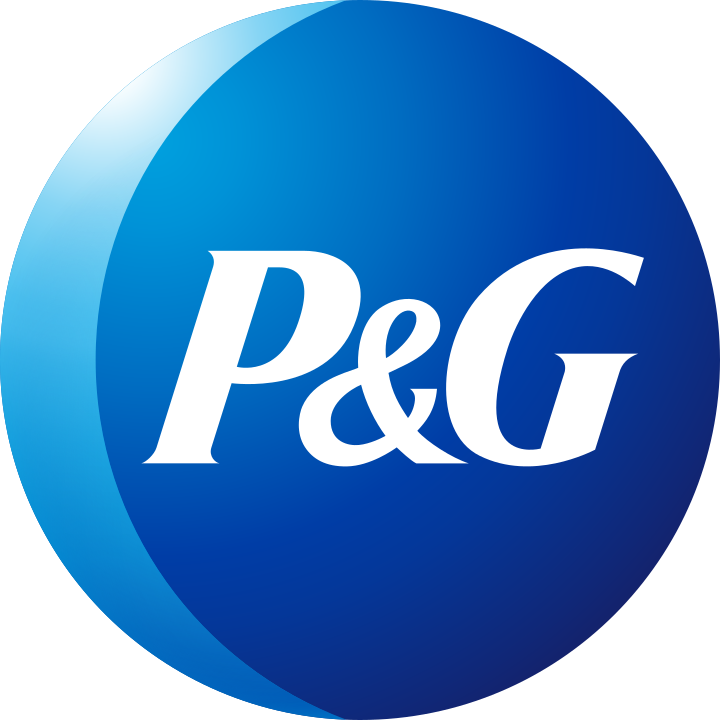
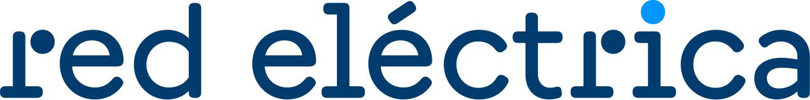
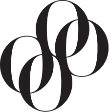
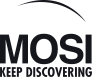
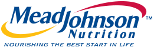
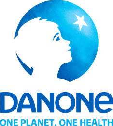
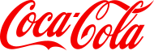
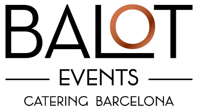

ASTC · Leading Edge Award
Visitor Experience · institución pequeña · 2016
Museo Móvil Interactivo Vive la Ciencia, México. Mi vinculación: dirección de Optimus, responsable del diseño y la producción del museo.

Soy Emilio Medina, consultor en comunicación y director de proyectos. A lo largo de más de treinta años he trabajado en marketing, museografía, eventos y programación cultural. El hilo conductor ha sido entender qué necesita cada proyecto, encontrar una forma de contarlo y organizar el trabajo para hacerlo posible.
Fundé y dirigí Optimus Medina Riley. Desde allí desarrollamos proyectos de comunicación experiencial y museografía en distintos países, reuniendo equipos de contenidos, diseño, producción audiovisual e ingeniería. Esa etapa me enseñó a mantener una visión de conjunto y a trabajar con profesionales que aportan conocimientos distintos a los míos.
Hoy aporto esa experiencia como consultor y director de proyectos, y también en formación. Me interesa colaborar desde el principio, cuando hay que ordenar las preguntas, y acompañar las decisiones hasta que toman forma. Puedo asumir una dirección completa o incorporarme a un equipo con un cometido definido.
LinkedIn (enlace externo, se abre en otra pestaña) · Ver vídeo · proyectos llave en mano (enlace externo, se abre en otra pestaña)
TRABAJOS DE EQUIPO
Reconocimientos a proyectos desarrollados durante mi etapa al frente de Optimus. El mérito corresponde a los proyectos y a los equipos que los hicieron posibles.
Visitor Experience · institución pequeña · 2016
Museo Móvil Interactivo Vive la Ciencia, México. Mi vinculación: dirección de Optimus, responsable del diseño y la producción del museo.
Diseño para el beneficio social · iniciativas gubernamentales
Vive la Ciencia, México. Diseño y realización del equipo de Optimus. La atribución al proyecto consta en su dosier.
En etapas y formatos distintos, desde Optimus y otras colaboraciones profesionales. Cuando hubo agencias o entidades intermediarias, se indican en las fichas.









Mi trayectoria incluye la colegiación en el Col·legi del Màrqueting i la Comunicació de Catalunya. Esta pertenencia profesional es distinta de una acreditación académica.
Podemos empezar por una necesidad concreta o por una idea que aún necesita forma.